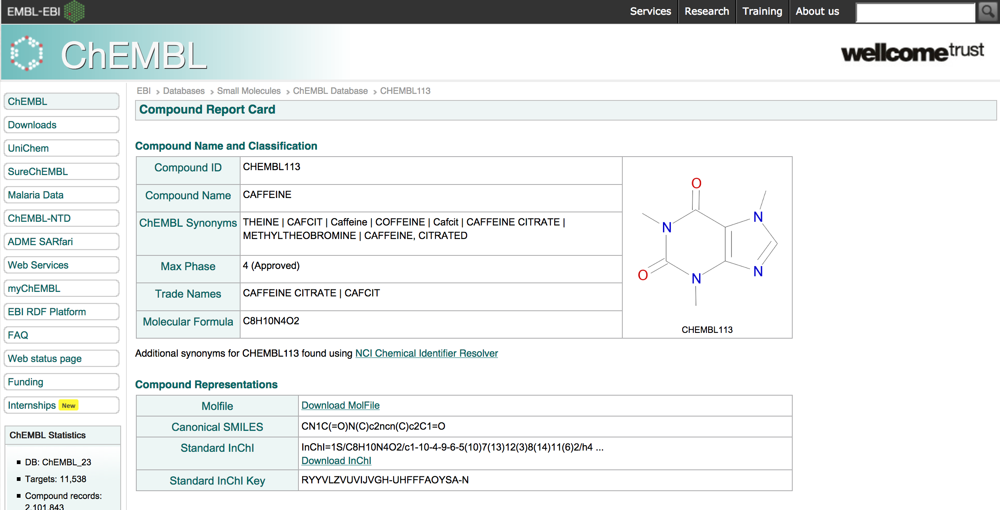

R 2017
14/06/2017
Repaso de clase anterior
R y bases de datos
R puede acceder a distintos tipos de bases de datos. Se puede 'hablar' con estas bases de datos con interfaces (protocolos), por ejemplo ODBC, con el paquete RODBC.
library(RODBC)
## abro una conexión a la base de datos OBDC
myconn <-odbcConnect("mydsn", uid="Rob", pwd="aardvark")
## bajo datos
crimedat <- sqlFetch(myconn, Crime)
## hago una 'query': selecciono todo de la tabla Punishment
pundat <- sqlQuery(myconn, "select * from Punishment")
## cierro conexión
close(myconn)
R en Física
Al igual que otras áreas, R es usado en Física directamente o a través de paquetes especializados. Algunos ejemplos de CRAN Task View: Chemometrics and Computational Physics:
- Self-Organizing Maps
- Differential Equations
- Cellular Automata
- Thermodynamics
- Mass Spectrometry
- Functional Magnetic Resonance Imaging
- Carbon Dating
- X-Ray Diffractograms
- Optics and Scattering Approximations
- Energy Modeling
- Positron Emission Tomography
- etc.
R en Química
Quimiometría, el uso de métodos matemáticos y estadísticos para analizar información química y correlacionarla con datos instrumentales.
Química computacional, área de la química que incorpora química teórica a simulaciones computacionales para calcular propiedades y estructuras de moléculas.

CRAN Task View: Chemometrics and Computational Physics
- Interfaces to External Libraries (para interactuar con Chemistry Development Kit (CDK), PubChem, etc.)
- Spectroscopy (libros con paquetes, ver link)
- Fluorescence Lifetime Imaging Microscopy
- Fluorescence Excitation-Emission Matrix (EEM)
- Water and Soil Chemistry (acidificación de mares, etc. Más en Environmetrics Task View)
- Calibration (modelos)
- Titration Curves
ChemmineR: Cheminformatics Toolkit for R
- Paquete para analizar (gran cantidad de) pequeñas moléculas en R
- Bioconductor!
- Lee archivos SDF directamente en R
- Calcula descriptores, fingerprints y valores de Tanimoto
- Muestra moléculas en 2D (JChemPaint) y 3D (Jmol),
- Calcula cadenas SMILES, y puede acceder campos de propiedad en formatos aceptados

ChemmineR - Ejemplito
library("ChemmineR") # Cargamos el paquete
sdfset <- data(sdfsample) # cargamos una "structure-data file (sdf)"
sdfset <- read.SDFset("http://faculty.ucr.edu/tgirke/Documents/R_BioCond/Samples/sdfsample.sdf") ## o de un archivo remoto
sdfset[[1]] # retorna un contenido resumido de C_23 H_28 N_4 O_6
## An instance of "SDF"
##
## _header_
## Molecule_Name Source
## "650001" " -OEChem-07071010512D"
## Comment Counts_Line
## "" " 61 64 0 0 0 0 0 0 0999 V2000"
##
## _atomblock_
## C1 C2 C3 C5 C6 C7 C8 C9 C10 C11 C12 C13 C14 C15 C16
## O_1 7.0468 0.0839 0 0 0 0 0 0 0 0 0 0 0 0 0
## O_2 12.2708 1.0492 0 0 0 0 0 0 0 0 0 0 0 0 0
## ... ... ... ... ... ... ... ... ... ... ... ... ... ... ... ...
## H_60 1.8411 -1.5985 0 0 0 0 0 0 0 0 0 0 0 0 0
## H_61 2.6597 -1.2843 0 0 0 0 0 0 0 0 0 0 0 0 0
##
## _bondblock_
## C1 C2 C3 C4 C5 C6 C7
## 1 1 16 2 0 0 0 0
## 2 2 23 1 0 0 0 0
## ... ... ... ... ... ... ... ...
## 63 33 60 1 0 0 0 0
## 64 33 61 1 0 0 0 0
##
## _datablock_ (33 data items)
## PUBCHEM_COMPOUND_CID PUBCHEM_COMPOUND_CANONICALIZED PUBCHEM_CACTVS_COMPLEXITY
## "650001" "1" "700"
## PUBCHEM_CACTVS_HBOND_ACCEPTOR
## "7" "..."
CDK - Chemistry Development Kit
CDK es una colección de bibliotecas modulares en Java para Quimioinformática y Química computacional. Es código libre. Referencias acá, acá y acá. Relación con SWs similares.
- Representación de ligación de valencia en moleculas y reacciones
- Escribe y lee formatos: SMILES, SDF, InChI, Mol2, CML, y otros
- Algoritmos eficientes para procesar moleculas: búsqueda de anillos, "Kekulisation", Aromaticidad
- Generación de coordenadas y rendering
- Identificadores canónicos par búsqueda exacta rápida
- Subestructuras y búsqueda de padrones SMARTS
- ECFP, Daylight, MACCS, y otros métodos de huellas para búsqueda por similaridad
- cómputo de descriptores QSAR
- …y mucho más
Paquete rcdk y CDK
rcdk permite al usuario acceder a CDK, cargar moleculas, evaluar sus descriptores y ver estructuras 2D.
library("rcdk")
mols <- load.molecules("dhfr_3d.sd")
fp.list <- lapply(mols, get.fingerprint)
Paquete rpubchem y PubChem
PubChem es un componente de la Molecular Libraries Roadmap Initiative de la NIH. Provee información de las actividades biologicas de moléculas pequeñas y datos de análisis biológicos. Está organizada en tres bases de datos interconectadas: PubChem Substance, PubChem Compound, y PubChem BioAssay. PubChem también provee de una herramienta de búsqueda rápida de similaridad química.
rpubchem es una interfaz para acceder desde R a datos de PubChem.

ChEMBL - EMBL-EBI
El European Bioinformatics Institute mantiene la base de datos ChEMBL, para ofrecer de manera abierta datos públicos de moléculas bioactivas. Está curada manualmente. Ver esta referencia y esta.
El paquete chemblr actúa como interfaz entre R y ChEMBL.
Bibliografía de Quimiometría y Quimioinformática
- Introduction to Multivariate Statistical Analysis in Chemometrics, 2009, paquete chemometrics.
- Chemometrics with R, 2011, paquetes ChemometricsWithR y ChemometricsWithRData.
- Edición especial de 'R News' llamada 'R in Chemistry' (2006) y volumen especial de Journal of Statistical Software (2007) dedicado a Quimiometría con R.
- A quick intro to chemical informatics in R
- R for computational chemistry